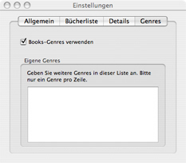

Der Reiter „Genres”
Das Einstellungsfenster bietet Ihnen viele Möglichkeiten, Books
an Ihre persönlichen Bedürfnisse anzupassen. Dazu stehen Ihnen
vier verschiedene Reiter zur Verfügung. Wenn Sie eigene Genres oder
die von Books mitgelieferten Genres nutzen möchten, können entsprechende
Einstellungen innerhalb des Reiters „Genres” vorgenommen werden.

Einstellhinweise
Books wird mit einer Liste von Genres ausgeliefert. Diese Liste ist
weder vollständig noch sehr umfangreich. Auch werden zusätzliche Genres
durch einige Erweiterungen für das Automatische Ausfüllen zu dieser
Liste hinzugefügt. Wenn Ihnen diese Genres ausreichen, setzen Sie einfach
ein Häkchen vor den Eintrag „Books-Genres verwenden”.
Möchten Sie allerdings selbst festgelegte Genres verwenden, entfernen
Sie bitte das Häkchen vor dem Eintrag und tragen Ihre eigenen Genres
in der unteren Anzeige ein. Beachten Sie bitte, daß jeweils nur ein
Genre pro Zeile eingetragen werden sollte. Um auf die nächste Zeile
zu wechseln, bestätigen Sie das Ende einer Zeile mit der Eingabetaste.